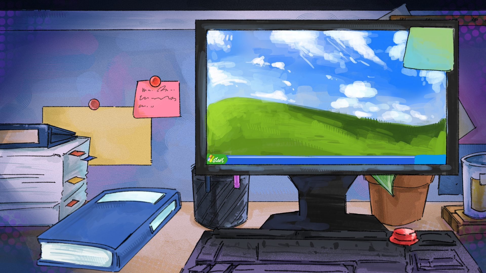
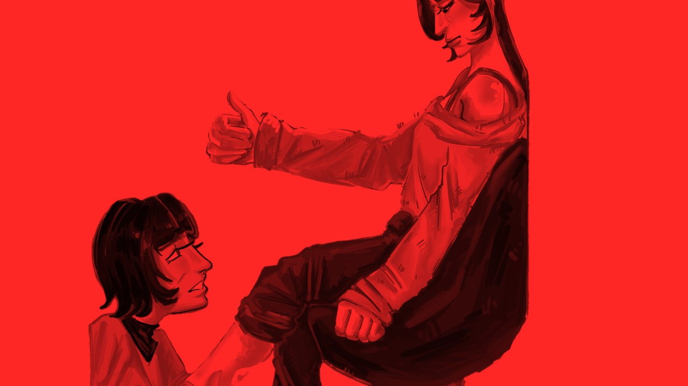
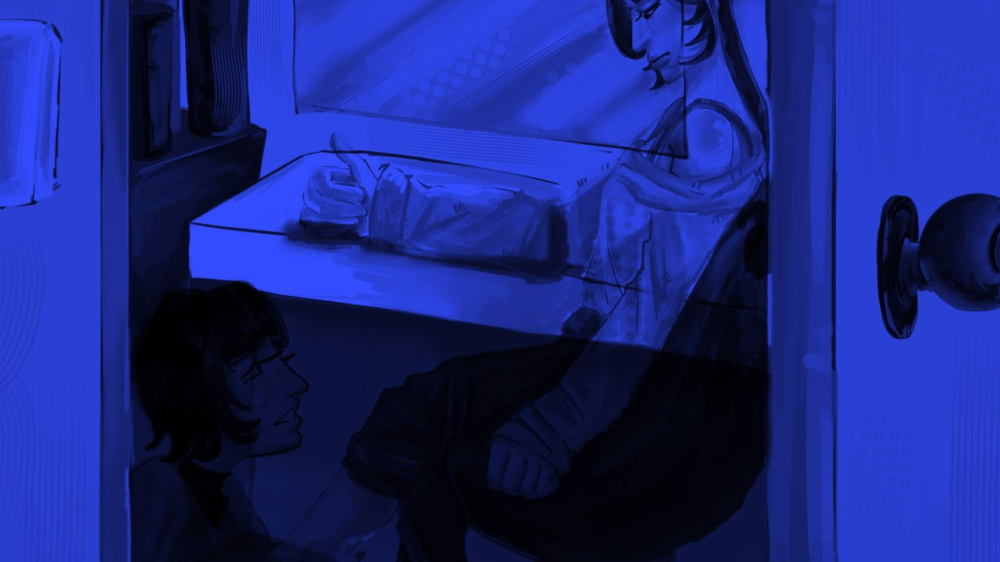

第一章
新聞編輯部
從一疊照片裡挑三張，裁掉不需要的部分，配上最吸睛的標題。照片外面還有什麼？
RI-041 BB 2026.11.22 23:10
流量加成
+1100%

剛到實像傳媒報到的新人。桌上那顆紅色按鈕，按下去就是流量。
拿起角色・搖一搖・再放回去
桌上有一顆紅色按鈕。按下去，新聞就發出去；發出去，點閱就往上跳。
總編只在乎一個數字。三個晚上，你要把一位女演員的新聞送上發燒榜第一名。
每一次選標題、裁照片、剪錄音，都只是動一動手指。可是螢幕的另一邊，是一個真實的人。

從一疊照片裡挑三張，裁掉不需要的部分，配上最吸睛的標題。照片外面還有什麼？
一段訪談錄音寄到你的信箱。只要剪掉半句話，意思就完全不一樣了。
現場直播，導播台在你手上。觀眾越多，你越停不下來。
實像傳媒・新進編輯
剛到實像傳媒報到的新人。想做好新聞，也想被看見。

實像傳媒・主編
你的上司。她只在乎一個數字：點閱。

實像傳媒・老闆
他看的不是新聞，是報表上的數字。
每一章結束，看看你換到了什麼，又失去了什麼。
直接看，只是一團亂。戴上鏡片，才看得到被藏起來的畫面。
拖著鏡片在明信片上移動，換換看紅色和藍色。



紅色鏡片：只看得到人。少了前後，看起來就像另一件事。
一則標題只要幾秒鐘就能寫好，卻可能跟著一個人很多年。這款遊戲想讓玩家站在編輯的位置，親手體會「流量」和「良心」之間的拉扯。
如果你或身邊的人正因為網路上的言論感到痛苦，可以撥打安心專線 1925（24 小時，免付費）。
（組員名字、分工、學校或課程，之後再填上）